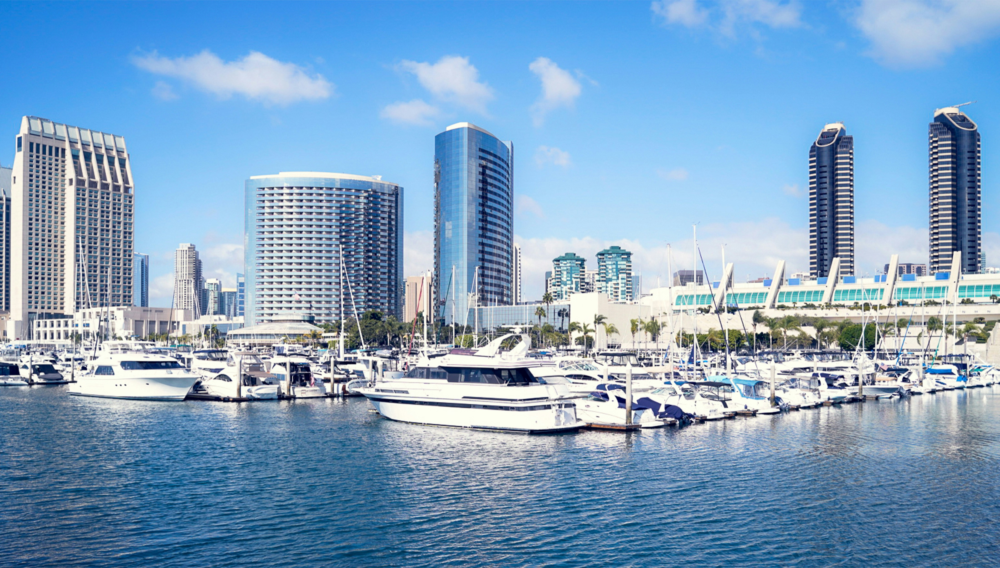

San Diego: A Travel Guide
Visiting San Diego for the first time? Here are a few things to do to make the most of your trip.
Art and Culture at Balboa Park
Balboa Park is San Diego's vast central public park. In addition to beautiful gardens, it's home to 17 museums and cultural institutions encompassing science, air and space, railroads, anthropology, natural history, and art—including a collection stocked with works from greats like Matisse, Monet, Dalí, and O'Keeffe. It offers immersive cultural experiences through their Japanese Friendship Garden, International Cottages, WorldBeat Center, and more.
Beer and Wine for the 21+
Names like Stone Brewing, Ballast Point, and Green Flash put San Diego on the beer lover's map, right next to Belgium, Germany, and the United Kingdom. It's not easy to keep track of them all, but north of 150 breweries in San Diego turn out an ever-changing array of beer styles, available on countless taps at bars, restaurants, and tasting rooms in every corner of the county. San Diego's dry, sunny climate makes it a wine region, dotted with wineries that make for lovely outings to the rural towns and backcountry.
Boat Lover's Paradise
The USS Midway Museum, an aircraft carrier that was the biggest ship in the world until 1955, is permanently docked in the downtown waterfront, home to 30 restored aircraft, and other exhibits. Just a few blocks away is the Maritime Museum of San Diego. Tour the tall-masted Star of India, the oldest active sailing ship in the world, which survived a cyclone in the Bay of Bengal, trapped in Alaska, and 21 trips around the globe. To see the whales, dolphins, seals, and sea lions that populate the coast, you can hop aboard a traditional whale-watching boat, or climb inside a much smaller craft used by Navy SEALs to get up close and personal with the marine mammals. The placid waters of Mission Bay are ideal year-round for learning to pilot small craft of every kind, from small sailboats to kayaks and SUPs.
High-Quality Cuisine
Local chefs and restaurants have earned many of the highest food-world accolades and appeared on every food show on television, including numerous Top Chef appearances. Using ingredients fished from local waters, raised or grown on local farms, or carefully picked from far-flung regions abroad, San Diego chefs create top-notch food of every kind. You're bound to find the right restaurant with the right mood—and first rate eats—wherever you look. Let's not forget the profound influence that Baja plays in local cuisine. Cali-Baja cuisine is truly a San Diego original.
If You Love Nature, You'll Love San Diego
Endless sunshine and a mild climate naturally make San Diego one of the most biodiverse places in the United States. For good reason, the San Diego Zoo and the San Diego Zoo Safari Park are known over the world. The experts at Scripps Institution of Oceanography provide the public with a chance to see sea turtles, leopard sharks, moray eels, and 5,000 other sea creatures in dozens of different habitats. The Torrey Pines State Natural Reserve is just one of two places that stately, rare Torrey Pine trees naturally grow. And the Anza-Borrego Desert State Park is the largest state park in California.
Have Fun Your Way
Spring breakers know San Diego as a place to whoop it with the city's vibrant nightlife. Golfers know it as the home to the world-famous links of Torrey Pines. Those who meditate or revel in spiritual experience or luxury spas recognize San Diego as a global center of these relaxing, reinvigorating pursuits at places like the Self-Realization Fellowship Encinitas Temple or spas like SpaTerre at Kona Kai Resort & Spa, Willows Spa at Viejas Casino & Resort, and others. Whether you're looking for a crazy good time, or a blissful rejuvenating one, it's here, just waiting for your arrival.
Choose Your Adventure
San Diego's famous surf—consistently fun all year-round—is just the beginning. The ocean also offers the chance to snorkel face to face with gentle leopard sharks, drop in a line on a deep sea fishing trip, or strap on a scuba tank to experience the biodiversity of the Pacific coast. The rugged backcountry hides phenomenal granite for rock climbing, ample trails for hiking, mountain biking and running, and plenty of opportunities to get behind the wheel of an ATV. Cyclists love both the coastal roadways in eyeshot of the ocean as well as the winding country roads.
Coronado Island: Small-Town Vibes
Coronado Island is an idyllic small town escape just minutes from downtown San Diego. Whether you reach it via the Coronado Ferry or the iconic Coronado Bridge, the resort island's hotels, restaurants, and beaches are a stone's throw from downtown San Diego. With one side facing the waterfront skyline and the other the Pacific, Coronado is blessed with both calm waters and fun waves. The Mica-rich sand's glittery appearance makes it recognized among the best beaches in the United States. The laid-back pace of life makes it perfect to explore via foot or bike.
San Diego: A Travel Guide
Visiting San Diego for the first time? Here are a few things to do to make the most of your trip.
Art and Culture Immersion at Balboa Park
Balboa Park is San Diego's vast central public park. In addition to beautiful gardens, it's home to 17 museums and cultural institutions encompassing science, air and space, railroads, anthropology, natural history, and art—including a collection stocked with works from greats like Matisse, Monet, Dalí, and O'Keeffe. It offers immersive cultural experiences through their Japanese Friendship Garden, International Cottages, WorldBeat Center, and more.
Some of the most notable museums at Balboa Park include:
- Museum of Us
- Natural History Museum
- Automative Museum
- Air and Space Museum
- Museum of Art
Beer and Wine for the 21+
Names like Stone Brewing, Ballast Point, and Green Flash put San Diego on the beer lover's map, right next to Belgium, Germany, and the United Kingdom. It's not easy to keep track of them all, but north of 150 breweries in San Diego turn out an ever-changing array of beer styles, available on countless taps at bars, restaurants, and tasting rooms in every corner of the county. San Diego's dry, sunny climate makes it a wine region, dotted with wineries that make for lovely outings to the rural towns and backcountry.
San Diego is currently experiencing a craft spirits boom, with numerous kinds of liquor being handcrafted in the same quality-is-king fashion as the local beer.San Diego Tourism Authority
Boat Lover's Paradise

The USS Midway Museum, an aircraft carrier that was the biggest ship in the world until 1955, is permanently docked in the downtown waterfront, home to 30 restored aircraft, and other exhibits. Just a few blocks away is the Maritime Museum of San Diego. Tour the tall-masted Star of India, the oldest active sailing ship in the world, which survived a cyclone in the Bay of Bengal, trapped in Alaska, and 21 trips around the globe. To see the whales, dolphins, seals, and sea lions that populate the coast, you can hop aboard a traditional whale-watching boat, or climb inside a much smaller craft used by Navy SEALs to get up close and personal with the marine mammals. The placid waters of Mission Bay are ideal year-round for learning to pilot small craft of every kind, from small sailboats to kayaks and SUPs.
High-Quality Cuisine
Local chefs and restaurants have earned many of the highest food-world accolades and appeared on every food show on television, including numerous Top Chef appearances. Using ingredients fished from local waters, raised or grown on local farms, or carefully picked from far-flung regions abroad, San Diego chefs create top-notch food of every kind. You're bound to find the right restaurant with the right mood—and first rate eats—wherever you look. Let's not forget the profound influence that Baja plays in local cuisine. Cali-Baja cuisine is truly a San Diego original.
Unique Nature Experiences
Endless sunshine and a mild climate naturally make San Diego one of the most biodiverse places in the United States. For good reason, the San Diego Zoo and the San Diego Zoo Safari Park are known over the world. The experts at Scripps Institution of Oceanography provide the public with a chance to see sea turtles, leopard sharks, moray eels, and 5,000 other sea creatures in dozens of different habitats. The Torrey Pines State Natural Reserve is just one of two places that stately, rare Torrey Pine trees naturally grow. And the Anza-Borrego Desert State Park is the largest state park in California.
Have Fun Your Way
Spring breakers know San Diego as a place to whoop it with the city's vibrant nightlife. Golfers know it as the home to the world-famous links of Torrey Pines. Those who meditate or revel in spiritual experience or luxury spas recognize San Diego as a global center of these relaxing, reinvigorating pursuits at places like the Self-Realization Fellowship Encinitas Temple or spas like SpaTerre at Kona Kai Resort & Spa, Willows Spa at Viejas Casino & Resort, and others. Whether you're looking for a crazy good time, or a blissful rejuvenating one, it's here, just waiting for your arrival.
Choose Your Own Adventure
San Diego's famous surf—consistently fun all year-round—is just the beginning. The ocean also offers the chance to snorkel face to face with gentle leopard sharks, drop in a line on a deep sea fishing trip, or strap on a scuba tank to experience the biodiversity of the Pacific coast. The rugged backcountry hides phenomenal granite for rock climbing, ample trails for hiking, mountain biking and running, and plenty of opportunities to get behind the wheel of an ATV. Cyclists love both the coastal roadways in eyeshot of the ocean as well as the winding country roads.
Coronado Island: Small-Town Vibes
Coronado Island is an idyllic small town escape just minutes from downtown San Diego. Whether you reach it via the Coronado Ferry or the iconic Coronado Bridge, the resort island's hotels, restaurants, and beaches are a stone's throw from downtown San Diego. With one side facing the waterfront skyline and the other the Pacific, Coronado is blessed with both calm waters and fun waves. The Mica-rich sand's glittery appearance makes it recognized among the best beaches in the United States. The laid-back pace of life makes it perfect to explore via foot or bike.